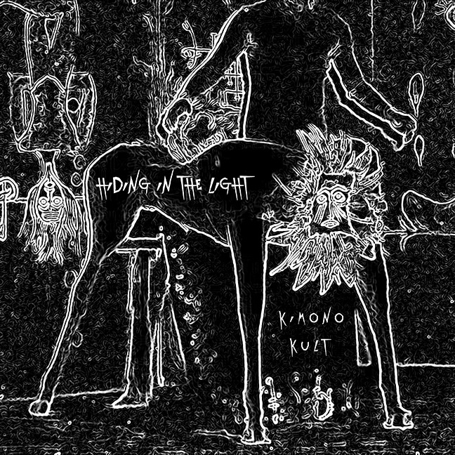

4 marca 2014r. ukaże się EP Kimono Kult, projektu muzycznego którego „matką chrzestną” jest Nicole Turley, szefowa wytwórni Neurotic Yell Records i liderka grupy Swahili Blonde. To synteza muzycznych stylów i talentów, które ma w zasięgu ręki – w Kimono Kult zaangażowani są bowiem obok niej samej, m.in. John Frusciante, Omar Rodriguez Lopez i Teri Gender Bender z Bosnian Rainbows.
Kimono Kult trudno nazwać supergrupą, choć w jego skład wchodzą muzycy znani wcześniej z takich zespołów jak Mars Volta, Red Hot Chili Peppers, Bosnian Rainbows, Swahili Blonde, Le Butcherettes, Dante Vs. Zombies i Raw Geronimo. Los Angeles jest miejscem, gdzie łatwo uwierzyć w iluzję sławy, ale oni zdecydowanie nie należą do ludzi, którzy tworzą cokolwiek dla poklasku. Kimono Kult nie można nawet zobaczyć – zgodnie z grą słów angielskie “occult” oznacza coś niewidzialnego, ukrytego.
Ale już niebawem, za niecałe 2 miesiące Kimono Kult będzie można usłyszeć. Debiutancka EPka dostępna już w sprzedaży pre-order ukaże się w wersji elektronicznej, a opis “cztery kawałki electro/dub/afro-beat/ avant-freak/jazzo-podobnej muzycznej ekstazy” brzmi nader zachęcająco. 
Wokalistką grupy jest Teri Gender Bender, której wokalne możliwości mogliśmy poznać i docenić słuchając Le Butcherettes i Bosnian Rainbows. Ona jest też autorką tekstów piosenek o nieco enigmatycznych, hiszpańskojęzycznych tytułach.
W otwierającym utworze “Todo Memos el Dolor” (“Wszystko, tylko nie ból”) słyszymy “odwróconą” gitarę Omara Rodrigueza Lopeza. Według oficjalnej notki wytwórni ma ona przypominać “It’s Raining Today” Scotta Walkera – przynajmniej dopóki nie wystartuje automat perkusyjny.
„Las Esposas” (“Żony”) rozpoczyna tajemniczy mówiony wstęp – niczym z mrocznego, nikobudżetowego filmu. Skomplikowana linia melodyczna grana na gitarze przez Omara łączy się tu z futurystycznymi elektronicznymi dźwiękami granymi przez Nicole Turley.
W „La Vida Es Una Caja Hermosa” (“Życie to piękne pudełko”) zainteresuje zapewne wszystkich najbardziej gitarowy dialog między Johnem Frusciante ,a Dantem White. Rozgrywając się na tle syntezatorowej struktury i dubowego podkładu nasila się w prawdziwą burzę dźwięków, by nieoczekiwanie obrócić się w ciszę.
Zamykający EP-kę utwór „La Cancion de Alexandra” (“Piosenka Aleksandry”) ma być tym najbardziej chwytliwym, m. in. dzięki zestawieniu skrzypiec i trąbki
Wydanie: 04 marca 2014
Teksty: Teri Gender Bender
Skład:
Omar Rodriguez-Lopez – gitara, instrumenty elektroniczne, instrumenty smyczkowe
Teri Gender Bender – wokal, gitara
John Frusciante – gitara
Nicole Turley – automat perkusyjny, gitara basowa, instrumenty elektroniczne, trąbka, chórki
Dante White-Aliano – gitara, instrumenty elektroniczne
Laena Geronimo – gitara basowa, skrzypce, trąbka
Nagranie, miks, produkcja i mastering – Nicole Turley